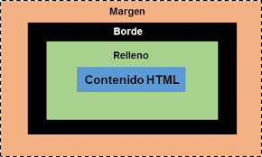

Què és el CSS?
El CSS (Cascading Style Sheets, o Fulls d'Estil en Cascada) és el llenguatge utilitzat per estilitzar pàgines web. Això significa que, mentre que el HTML ens permet estructurar el contingut (afegint textos, imatges, enllaços, etc.), el CSS ens ajuda a definir com es veurà aquest contingut: colors, mides, disposició en pantalla, etc.
Un punt important del CSS és la "cascada", que fa referència a com s'apliquen les regles d'estil en funció de la seva especificitat i l'ordre en què estan declarades. Això vol dir que si hi ha conflicte entre dues regles que afecten el mateix element, la que sigui més específica o la que aparegui més tard tindrà prioritat.
Sintaxi del CSS
Abans d'endinsar-nos en com aplicar estils amb CSS, és important entendre la seva sintaxi bàsica. Una regla CSS està composta per tres parts principals: un selector, una propietat i un valor.
selector {
propietat: valor;
}A continuació, expliquem cadascun d'aquests elements:
- Selector: Determina a quins elements HTML s'aplicaran els estils. Pot ser un nom d'etiqueta, una classe, un id, o altres tipus de selectors.
-
Propietat: És l'aspecte de l'element que vols
modificar. Per exemple, pot ser el color del text
(
color), la mida de la lletra (font-size), o el marge (margin). -
Valor: És el que defineix com es veurà l'element
segons la propietat especificada. Per exemple, si la propietat és
color, el valor pot serred(vermell).
Exemple de regla CSS:
p {
color: blue;
font-size: 16px;
}
En aquest exemple, el selector és p (tots els paràgrafs),
la propietat color defineix el color del text, i el valor
blue és el color blau. A més, s'especifica la mida de la
font amb la propietat font-size i el valor
16px.
Com afegir CSS a una pàgina web
Hi ha diverses formes d'integrar CSS a un document HTML:
-
CSS Inline: S'escriu directament a l'etiqueta HTML
amb l'atribut
style. Es fa servir per aplicar estils específics a un sol element. -
CSS Intern: S'inclou dins d'un bloc
<style>dins del fitxer HTML. Ideal per aplicar estils en una sola pàgina. -
CSS Extern: El CSS es col·loca en un fitxer separat
(.css) i es vincula amb l'etiqueta
<link>. Aquest és el mètode més recomanat per organitzar estils en projectes grans.
Exemple de CSS Inline:
<p style="color: red;">Aquest és un text vermell</p>Exemple de CSS Intern:
<style>
p {
color: blue;
}
</style>
<p>Aquest és un text blau</p>Exemple de CSS Extern:
<link rel="stylesheet" href="estils.css">I dins de l’arxiu estils.css:
p {
color: green;
}Selectors en CSS
Els selectors són la manera de dir al CSS a quins elements HTML volem aplicar els estils. Alguns dels selectors més comuns són:
-
Selector d'etiqueta: Aplica estils a tots els
elements d'un tipus concret.
Exemple:p { color: red; }aplica el color vermell a tots els paràgrafs. -
Selector de classe: Aplica estils a elements que
tenen una classe específica. Es defineix amb un punt (.) abans del
nom de la classe.
Exemple:.nom-classe { color: blue; }. -
Selector d'id: Aplica estils a un element que té un
id específic. Es defineix amb un coixinet (#) abans del nom de
l'id.
Exemple:#nom-id { color: green; }. -
Selector d'atribut: Aplica estils a elements que
contenen un atribut específic.
Exemple:a[target="_blank"] { color: purple; }aplicarà estils als enllaços que s'obren en una nova pestanya.
Prioritat en l'aplicació de regles CSS
Quan hi ha múltiples regles CSS que s'apliquen al mateix element, cal entendre quina regla té prioritat. Aquesta prioritat es determina per diversos factors:
1. Especificitat
L'especificitat és un sistema de puntuació que determina quina regla s'aplica quan hi ha múltiples regles que afecten el mateix element. A major especificitat, més prioritat té una regla. A continuació, expliquem l'ordre de major a menor especificitat:
-
ID (#): Els selectors d'ID tenen la màxima
prioritat.
Ex:#header { color: red; }. -
Classe (.) o atributs: Les classes i els atributs
tenen una especificitat intermèdia.
Ex:.classe { color: blue; }. -
Etiqueta (nom d'etiqueta HTML): Els selectors
d'etiqueta tenen la menor especificitat.
Ex:p { color: green; }.
2. Ordre de declaració
Quan dues regles tenen la mateixa especificitat, es prioritza l'última regla que apareix en el codi. Això vol dir que les regles declarades després sobreescriuran les anteriors si tenen la mateixa especificitat.
/* Primera regla */
p {
color: red;
}
/* Segona regla (té prioritat) */
p {
color: blue;
}En aquest exemple, tots els paràgrafs seran de color blau perquè la segona regla apareix després de la primera.
3. Important (!important)
Quan volem donar prioritat a una regla, podem utilitzar la declaració
!important. Aquesta regla tindrà prioritat per sobre de
qualsevol altra, independentment de l'especificitat o l'ordre de
declaració.
p {
color: red !important;
}En aquest cas, el color dels paràgrafs serà vermell, encara que altres regles posteriors intentin canviar-lo.
4. Estils Inline
Els estils inline, declarats directament a l'etiqueta HTML amb
l'atribut style, tenen més prioritat que qualsevol regle
externa o interna, sempre que no hi hagi un !important.
<p style="color: green;">Aquest text és verd</p>Això canviarà el color del paràgraf a verd independentment d'altres regles CSS que puguin afectar els paràgrafs.
Resum de la Prioritat:
- Estils amb
!important. - Estils inline (dins de l'etiqueta HTML).
- Selectors d'ID.
- Selectors de classe o atribut.
- Selectors d'etiqueta.
- Ordre de declaració (les últimes regles tenen més prioritat).
Propietats CSS fonamentals
Amb el CSS, podem aplicar una gran varietat de propietats per modificar l'aparença dels elements. A continuació, es mostren algunes de les propietats més utilitzades:
Color
Defineix el color del text d'un element:
p {
color: red;
}Background-color
Defineix el color de fons d'un element:
div {
background-color: lightblue;
}Font-size
Defineix la mida de la font:
h1 {
font-size: 32px;
}Font-family
Defineix la tipografia que es farà servir:
p {
font-family: 'Arial', sans-serif;
}Margin
Defineix l'espai extern fora de l'element:
div {
margin: 20px;
}Padding
Defineix l'espai intern dins de l'element:
div {
padding: 10px;
}Border
Defineix el contorn d'un element:
div {
border: 1px solid black;
}El Model de Caixa (Box Model)
El model de caixa és fonamental per entendre com els elements HTML ocupen espai a la pàgina. Cada element es considera una "caixa" amb quatre parts:
- Contingut: El text o altres elements dins de l'element.
- Padding: L'espai entre el contingut i la vora de l'element.
- Border: La línia que envolta l'element.
- Margin: L'espai extern fora de l'element.
Aquestes quatre parts treballen conjuntament per determinar la mida final d'un element a la pàgina.
Media Queries i Responsivitat
Un dels objectius principals del disseny modern de pàgines web és fer que les pàgines siguin "responsives", és a dir, que es vegin bé tant en dispositius mòbils com en pantalles grans. Per això, utilitzem les media queries, que ens permeten aplicar estils específics segons la mida de la pantalla.
Exemple de Media Query:
@media (max-width: 600px) {
body {
background-color: lightblue;
}
}En aquest exemple, quan la mida de la pantalla és inferior a 600 píxels, es canviarà el color de fons a blau clar.